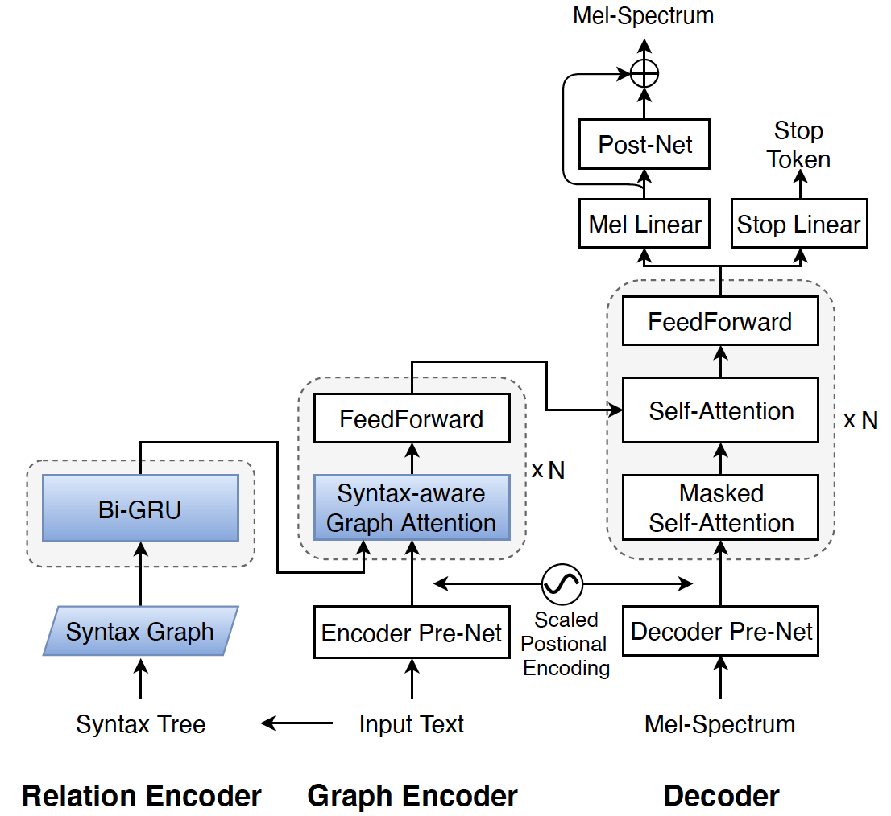
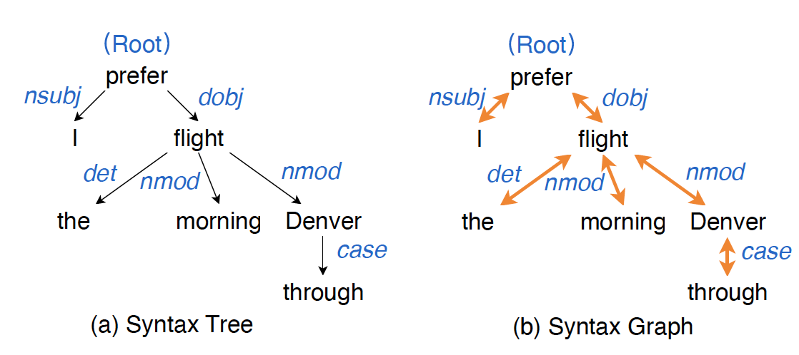

Abstract:
Attention-based end-to-end text-to-speech synthesis (TTS) is superior to conventional statistical methods in many ways. Transformer-based TTS is one of such successful implementations. While Transformer TTS models the speech frame sequence well with a self-attention mechanism, it does not associate input text with output utterances from a syntactic point of view at sentence level. We propose a novel neural TTS model, denoted as GraphSpeech, that is formulated under graph neural network framework. GraphSpeech encodes explicitly the syntactic relation of input lexical tokens in a sentence, and incorporates such information to derive syntactically motivated character embeddings for TTS attention mechanism. Experiments show that GraphSpeech consistently outperforms the Transformer TTS baseline in terms of spectrum and prosody rendering of utterances.

Fig. 1: The proposed GraphSpeech that consists of Relation Encoder, Graph Encoder and Decoder. Its difference from Transformer TTS is highlighted in blue.
Fig. 1: The proposed GraphSpeech that consists of Relation Encoder, Graph Encoder and Decoder. Its difference from Transformer TTS is highlighted in blue.

Fig. 2: An example of (a) syntax tree and (b) syntax graph of a sentence "I prefer the morning flight through Denver.". The blue words denote the dependency relation between two nodes. The black arrows denote directed one-way connections, and yellow arrows denote two-way connections. Self-loop connections are omitted due to space limitation.
Fig. 2: An example of (a) syntax tree and (b) syntax graph of a sentence "I prefer the morning flight through Denver.". The blue words denote the dependency relation between two nodes. The black arrows denote directed one-way connections, and yellow arrows denote two-way connections. Self-loop connections are omitted due to space limitation.
We use the state-of-the-art Transformer TTS [1] as the baseline .
Speech Samples:
| Transformer TTS | GraphSpeech | ||
|---|---|---|---|
| [1] “We conduct objective evaluations to assess the performance of our proposed framework .” | |||
| [2] “The main contributions of this paper are listed as follows .” | |||
| [3] “Graphical structure plays an important role in natural language processing .” | |||
| [4] “The blue words denote the dependency relation between two nodes .” | |||
| [5] “We then encode them into vector representations .” | |||